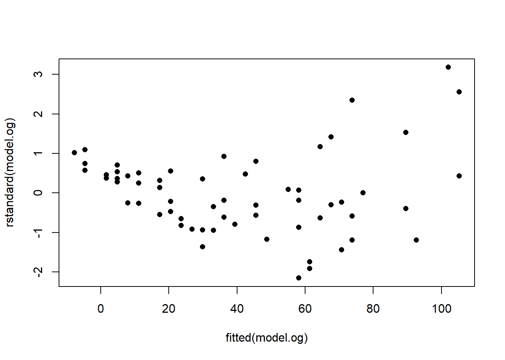
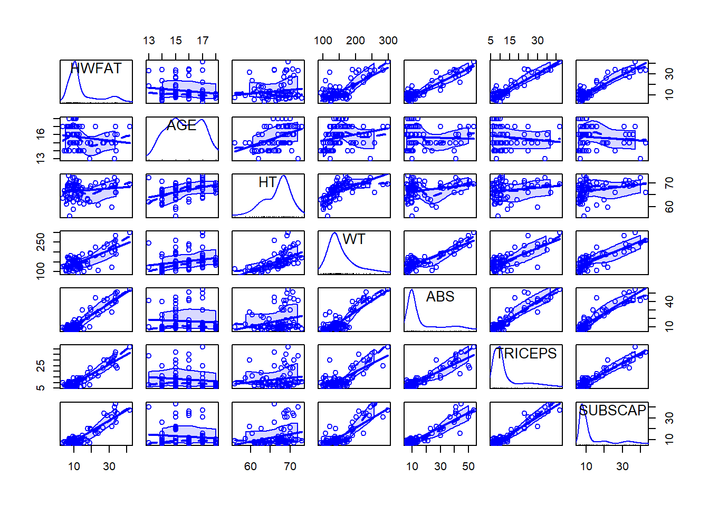

3 Example 1: Backward and Forward Selection
We have looked at the data for 78 high school wrestlers in the attempt to understand their body fat content using three different body fat measuring techniques: hydrostatic weighing (HWFAT), skinfold measurements (SKFAT), and the Tanita body fat scale (TANFAT). In this example, we will create a regression model to predict the wrestlers' hydrostatic fat HWFAT using other variables in the dataset. The question we ask in model selection is: what variables are best?
Data: HSwrestler
Columns:
AGE - Age of wrestlerHT - Height in inchesWT - Weight in poundsABS - Abdominal fatTRICEPS - Tricep fatSUBSCAP - Subscapular fatHWFAT - Hydrostatic fatTANFAT - Tanita fatSKFAT - Skin fatThe data HSwrestler are available from the package PASWR and ca be loaded into your environment using
## Warning: package 'PASWR' was built under R version 4.2.33.1 Part 1: Backward Elimination and Forward Selection
- Exploratory analysis: use
pairsto visualise the data and determine which predictors may be useful in predictingHWFAT.
 We can see that there are many positive relationships with
We can see that there are many positive relationships with HWFAT, mainly SKFAT, HWFAT, SUBCAP, TRIPCEPS, ABS and WT. The only variables that do not seem to have a positive relationship with HWFAT are AGE and HT.
You can get a little more information by calling another function from the car package:
## Loading required package: carData##
## Attaching package: 'carData'## The following object is masked from 'package:PASWR':
##
## Wool
# Or
scatterplotMatrix(formula = ~ HWFAT + AGE + HT + WT + ABS + TRICEPS + SUBSCAP, data = HSwrestler)
- Backward elimination starts with all the variables in the model (
model.all) and eliminates variables with the largest (least significant) \(p\)-values. The period in the short-hand notationHWFAT ~. tells R to include all of the variables specified in the data argument. In this case, the variablesTANFATandSKFATare removed using negative indices. Do this in two steps, first fitting the full model (all variables), and then removing the least significant variable.
1. Fit model (full model at the start)
model.all <- lm(HWFAT ~ . , data = HSwrestler[,c(-8,-9)])
summary(model.all) # Take note of which are least significant##
## Call:
## lm(formula = HWFAT ~ ., data = HSwrestler[, c(-8, -9)])
##
## Residuals:
## Min 1Q Median 3Q Max
## -6.162 -1.858 -0.464 2.502 8.177
##
## Coefficients:
## Estimate Std. Error t value Pr(>|t|)
## (Intercept) 13.29370 9.63027 1.380 0.1718
## AGE -0.32893 0.32158 -1.023 0.3098
## HT -0.06731 0.16051 -0.419 0.6762
## WT -0.01365 0.02591 -0.527 0.5999
## ABS 0.37142 0.08837 4.203 7.55e-05 ***
## TRICEPS 0.38743 0.13761 2.815 0.0063 **
## SUBSCAP 0.11405 0.14193 0.804 0.4243
## ---
## Signif. codes: 0 '***' 0.001 '**' 0.01 '*' 0.05 '.' 0.1 ' ' 1
##
## Residual standard error: 3.028 on 71 degrees of freedom
## Multiple R-squared: 0.8918, Adjusted R-squared: 0.8827
## F-statistic: 97.54 on 6 and 71 DF, p-value: < 2.2e-162. Remove the least significant term by testing first
## Single term deletions
##
## Model:
## HWFAT ~ AGE + HT + WT + ABS + TRICEPS + SUBSCAP
## Df Sum of Sq RSS AIC F value Pr(>F)
## <none> 651.05 179.51
## AGE 1 9.594 660.64 178.65 1.0463 0.309839
## HT 1 1.613 652.66 177.70 0.1759 0.676225
## WT 1 2.546 653.60 177.81 0.2777 0.599879
## ABS 1 162.000 813.05 194.84 17.6669 7.549e-05 ***
## TRICEPS 1 72.683 723.73 185.76 7.9264 0.006301 **
## SUBSCAP 1 5.921 656.97 178.21 0.6458 0.424315
## ---
## Signif. codes: 0 '***' 0.001 '**' 0.01 '*' 0.05 '.' 0.1 ' ' 13. Repeat steps 1 and 2! To see if we are done, we need to test our new, updated model
## Single term deletions
##
## Model:
## HWFAT ~ AGE + WT + ABS + TRICEPS + SUBSCAP
## Df Sum of Sq RSS AIC F value Pr(>F)
## <none> 652.66 177.70
## AGE 1 9.875 662.54 176.87 1.0894 0.300098
## WT 1 10.554 663.22 176.95 1.1643 0.284169
## ABS 1 189.072 841.73 195.54 20.8580 1.996e-05 ***
## TRICEPS 1 78.809 731.47 184.59 8.6941 0.004302 **
## SUBSCAP 1 5.693 658.36 176.38 0.6281 0.430660
## ---
## Signif. codes: 0 '***' 0.001 '**' 0.01 '*' 0.05 '.' 0.1 ' ' 1As you can see, there are still terms with \(p\)-values larger than \(\alpha_{\text{crit}} = 0.2\), meaning we will have to remove the least-significant term again. Repeat on your own until all your terms have the acceptable p-value. What variables are left in your final model?
##
## Call:
## lm(formula = HWFAT ~ AGE + ABS + TRICEPS, data = HSwrestler)
##
## Residuals:
## Min 1Q Median 3Q Max
## -5.8374 -2.0468 -0.4215 2.3076 7.9850
##
## Coefficients:
## Estimate Std. Error t value Pr(>|t|)
## (Intercept) 10.61606 4.23272 2.508 0.0143 *
## AGE -0.53309 0.26067 -2.045 0.0444 *
## ABS 0.35643 0.06354 5.610 3.32e-07 ***
## TRICEPS 0.46561 0.09898 4.704 1.16e-05 ***
## ---
## Signif. codes: 0 '***' 0.001 '**' 0.01 '*' 0.05 '.' 0.1 ' ' 1
##
## Residual standard error: 2.998 on 74 degrees of freedom
## Multiple R-squared: 0.8895, Adjusted R-squared: 0.885
## F-statistic: 198.5 on 3 and 74 DF, p-value: < 2.2e-16- We can also perform model selection the other way around by adding one variable at the time. The functions add1() and update() are used to create a model using forward selection. In forward selection, the initial model only has an intercept (no predictors). The steps are the same as in backward selection.
1. Fit model (only intercept at the start)
# We define SCOPE - an object to help us keep track of the variables we can add
SCOPE <- (~ . + AGE + HT + WT + ABS + TRICEPS + SUBSCAP)
# Fit inital model
mod.fs <- lm(HWFAT ~ 1, data = HSwrestler)
summary(mod.fs)##
## Call:
## lm(formula = HWFAT ~ 1, data = HSwrestler)
##
## Residuals:
## Min 1Q Median 3Q Max
## -10.655 -5.508 -3.100 1.182 27.655
##
## Coefficients:
## Estimate Std. Error t value Pr(>|t|)
## (Intercept) 14.235 1.001 14.22 <2e-16 ***
## ---
## Signif. codes: 0 '***' 0.001 '**' 0.01 '*' 0.05 '.' 0.1 ' ' 1
##
## Residual standard error: 8.84 on 77 degrees of freedomHere, we see ABS, TRICEPS AND SUBSCAP are the most significant, so we add them to the model.
2. Test and add the most significant term
## Single term additions
##
## Model:
## HWFAT ~ 1
## Df Sum of Sq RSS AIC F value Pr(>F)
## <none> 6017.8 340.97
## AGE 1 175.0 5842.8 340.67 2.2765 0.1355
## HT 1 117.8 5900.0 341.43 1.5175 0.2218
## WT 1 3237.6 2780.2 282.74 88.5045 2.219e-14 ***
## ABS 1 5072.8 945.0 198.57 407.9929 < 2.2e-16 ***
## TRICEPS 1 5056.3 961.5 199.92 399.6462 < 2.2e-16 ***
## SUBSCAP 1 4939.0 1078.8 208.90 347.9456 < 2.2e-16 ***
## ---
## Signif. codes: 0 '***' 0.001 '**' 0.01 '*' 0.05 '.' 0.1 ' ' 1##
## Call:
## lm(formula = HWFAT ~ ABS, data = HSwrestler)
##
## Residuals:
## Min 1Q Median 3Q Max
## -9.0920 -2.1788 -0.3144 2.2722 10.7798
##
## Coefficients:
## Estimate Std. Error t value Pr(>|t|)
## (Intercept) 3.65369 0.65867 5.547 4.05e-07 ***
## ABS 0.63246 0.03131 20.199 < 2e-16 ***
## ---
## Signif. codes: 0 '***' 0.001 '**' 0.01 '*' 0.05 '.' 0.1 ' ' 1
##
## Residual standard error: 3.526 on 76 degrees of freedom
## Multiple R-squared: 0.843, Adjusted R-squared: 0.8409
## F-statistic: 408 on 1 and 76 DF, p-value: < 2.2e-16ABS is looking like a good addition. Evaluate your model again and add another variable if appropriate.
3. Repeat steps 1 and 2! Now we repeat steps 1 and 2 until the predictor we add has a \(p\)-value greater than \(\alpha_{\text{crit}}\). What are the predictors in your final model?
## Single term additions
##
## Model:
## HWFAT ~ ABS
## Df Sum of Sq RSS AIC F value Pr(>F)
## <none> 944.96 198.57
## AGE 1 80.876 864.08 193.59 7.0199 0.0098255 **
## HT 1 61.598 883.36 195.31 5.2298 0.0250250 *
## WT 1 43.734 901.22 196.87 3.6396 0.0602498 .
## TRICEPS 1 242.173 702.78 177.47 25.8443 2.639e-06 ***
## SUBSCAP 1 132.580 812.38 188.77 12.2400 0.0007904 ***
## ---
## Signif. codes: 0 '***' 0.001 '**' 0.01 '*' 0.05 '.' 0.1 ' ' 1##
## Call:
## lm(formula = HWFAT ~ ABS + TRICEPS, data = HSwrestler)
##
## Residuals:
## Min 1Q Median 3Q Max
## -6.5558 -2.2550 -0.5245 2.3365 9.4957
##
## Coefficients:
## Estimate Std. Error t value Pr(>|t|)
## (Intercept) 2.05904 0.65219 3.157 0.0023 **
## ABS 0.33708 0.06415 5.255 1.34e-06 ***
## TRICEPS 0.50430 0.09920 5.084 2.64e-06 ***
## ---
## Signif. codes: 0 '***' 0.001 '**' 0.01 '*' 0.05 '.' 0.1 ' ' 1
##
## Residual standard error: 3.061 on 75 degrees of freedom
## Multiple R-squared: 0.8832, Adjusted R-squared: 0.8801
## F-statistic: 283.6 on 2 and 75 DF, p-value: < 2.2e-16## Single term additions
##
## Model:
## HWFAT ~ ABS + TRICEPS
## Df Sum of Sq RSS AIC F value Pr(>F)
## <none> 702.78 177.47
## AGE 1 37.595 665.19 175.18 4.1823 0.04441 *
## HT 1 25.246 677.54 176.62 2.7574 0.10104
## WT 1 30.812 671.97 175.97 3.3932 0.06947 .
## SUBSCAP 1 2.244 700.54 179.22 0.2370 0.62782
## ---
## Signif. codes: 0 '***' 0.001 '**' 0.01 '*' 0.05 '.' 0.1 ' ' 1##
## Call:
## lm(formula = HWFAT ~ ABS + TRICEPS + AGE, data = HSwrestler)
##
## Residuals:
## Min 1Q Median 3Q Max
## -5.8374 -2.0468 -0.4215 2.3076 7.9850
##
## Coefficients:
## Estimate Std. Error t value Pr(>|t|)
## (Intercept) 10.61606 4.23272 2.508 0.0143 *
## ABS 0.35643 0.06354 5.610 3.32e-07 ***
## TRICEPS 0.46561 0.09898 4.704 1.16e-05 ***
## AGE -0.53309 0.26067 -2.045 0.0444 *
## ---
## Signif. codes: 0 '***' 0.001 '**' 0.01 '*' 0.05 '.' 0.1 ' ' 1
##
## Residual standard error: 2.998 on 74 degrees of freedom
## Multiple R-squared: 0.8895, Adjusted R-squared: 0.885
## F-statistic: 198.5 on 3 and 74 DF, p-value: < 2.2e-16The model containing ABS, TRICEPS and AGE, has all significant predictors. The addition of more variables would not result in a better outcome. This is our final model.